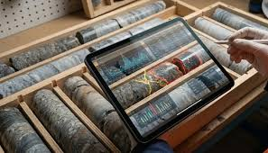
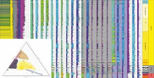

Modelamiento
Ofrecemos servicios de modelamiento geológico 3D utilizando software especializado como Leapfrog, Gemcom y Surpac. Nuestro equipo de expertos en geología y minería utiliza estas herramientas para crear modelos precisos y detallados de depósitos minerales, lo que permite a nuestros clientes tomar decisiones informadas sobre la exploración y explotación de recursos minerales.

Estimación
Realizamos estimaciones de reservas minerales utilizando métodos geostadísticos y técnicas de evaluación de recursos. Nuestro equipo de expertos en geología y minería asegura la precisión y confiabilidad de los resultados, lo que permite a nuestros clientes planificar de manera efectiva la explotación de sus recursos minerales.

Geoquímica
Ofrecemos servicios de análisis geoquímico para la identificación y caracterización de depósitos minerales. Nuestro laboratorio está equipado con tecnología avanzada para realizar análisis detallados de muestras, lo que nos permite proporcionar información precisa y confiable sobre la composición química de los materiales geológicos.

Contactos
Para más información sobre nuestros servicios, no dudes en contactarnos.